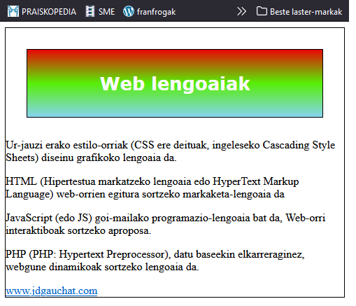
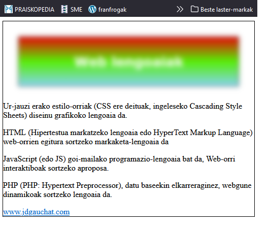
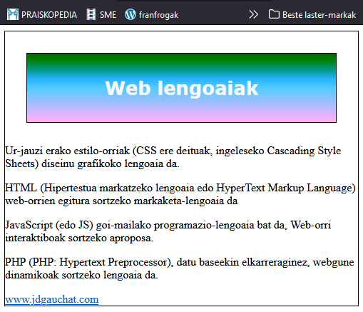
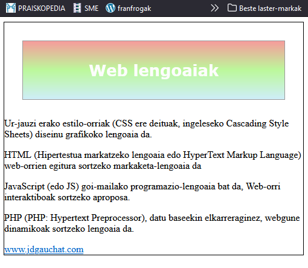
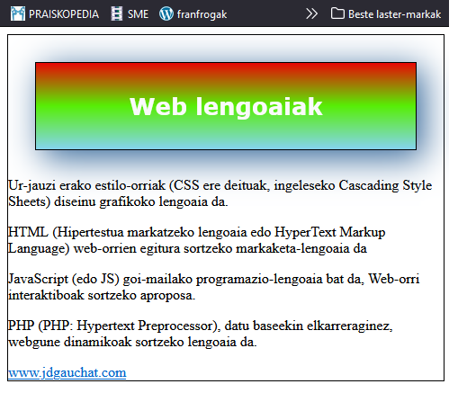
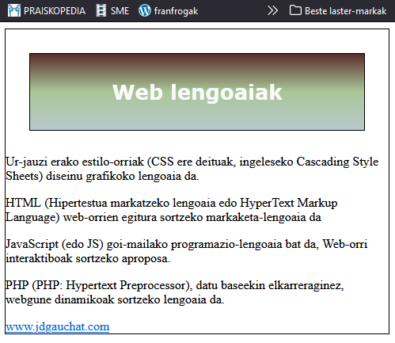

CSS propietateak (iragazkiak)
Iragazkiek efektuak gehitzen dizkiote elementu bati eta haren edukiari. CSSk elementu bati iragazki bat esleitzeko filter propietatea eta hura sortzeko hurrengo funtzioak biltzen ditu.
- blur(balioa) —Funtzio honek lausotu egiten du. Pixeletan 1px-tik 10px-ra bitarteko balioak onartzen ditu.
- grayscale(balioa) —Funtzio honek grisen eskala bihurtzen ditu irudiaren koloreak. 0.1 eta 1 arteko zenbaki hamartarrak onartzen ditu.
- drop-shadow(x y tamaina kolorea) —Funtzio honek itzal bat sortzen du. x eta y atributuek itzalaren eta irudiaren arteko distantzia zehazten dute, tamaina atributuak itzalaren tamaina zehazten du, eta kolorea atributuak haren kolorea adierazten du.
- sepia(balioa) —Funtzio honek tonu sepia (okrea) ematen die irudiaren koloreei. 0.1 eta 1 arteko zenbaki hamartarrak onartzen ditu.
- brightness(balioa) —Funtzio honek irudiaren distira aldatzen du. 0.1 eta 10 arteko zenbaki hamartarrak onartzen ditu.
- contrast(balioa) —Funtzio honek irudiaren kontrastea aldatzen du. 0.1 eta 10 arteko zenbaki hamartarrak onartzen ditu.
- hue-rotate(balioa) —Funtzio honek errotazio bat aplikatzen die irudiaren koloreei. Onartzen du 1deg eta 360deg bitarteko balio bat gradutan.
- invert(balioa) —Funtzio honek irudiaren koloreak alderantzikatu eta negatibo bat sortzen du. 0.1 eta 1 arteko zenbaki hamartarrak onartzen ditu.
- saturate(balioa) — Funtzio honek irudiaren koloreak asetu egiten ditu. 0.1 eta 10 arteko zenbaki hamartarrak onartzen ditu.
- opacity(balioa) —Funtzio honek irudiaren opakutasuna aldatzen du. 0 eta 1 arteko zenbaki hamartarrak onartzen ditu (0 erabat gardena da eta 1 guztiz opakua).
header {
margin: 30px;
padding: 15px;
text-align: center;
background:-webkit-linear-gradient(top, #ea0505, #57ee05, #85d4ec);
/*filter: blur(5px);*/
#titulua {
font: bold 26px Verdana, sans-serif;
color:rgb(250, 250, 250);
Iragazkia baliogabetua daukat /*filter: blur(5px);*/

Iragazkirik gabe horrela ikusten da.
Iragazki horiek, irudiei ez ezik, dokumentuko beste elementu batzuei ere aplika dakizkieke. Hurrengo adibideak lausotze-efektua aplikatzen dio gure dokumentuaren goiburuari.
header {
margin: 30px;
padding: 15px;
text-align: center;
background:-webkit-linear-gradient(top, #ea0505, #57ee05, #85d4ec);
filter: blur(5px);
#titulua {
font: bold 26px Verdana, sans-serif;
color:rgb(250, 250, 250);
Goiburuari iragazki bat aplikatu diogu

Goiburua lausotu egin dugu
Egin ezazu zuk zeuk
Idatzi zure .css artxiboan goiko arauak eta ireki dokumentua zure nabigatzailean eta ikusi efektua. Jarraian frogatu atal honetan ikasitako funtzioak blur() funtzioa beste edozein funtzio erabilgarrirekin zer-nolako efektuak lor daitezkeen ikusteko.

filter:hue-rotate(120deg); ipini diot. Aldatu balioa eta ikusi efektua.

filter:opacity(0.4); ipini diot. Aldatu balioa eta ikusi efektua.

filter: drop-shadow(8px 8px 18px #336699); ipini diot. Aldatu balioak eta ikusi efektua.

filter: grayscale(0.8); ipini diot. Aldatu balioa eta ikusi efektua.